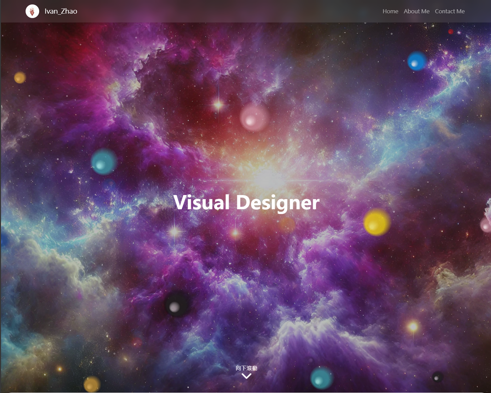
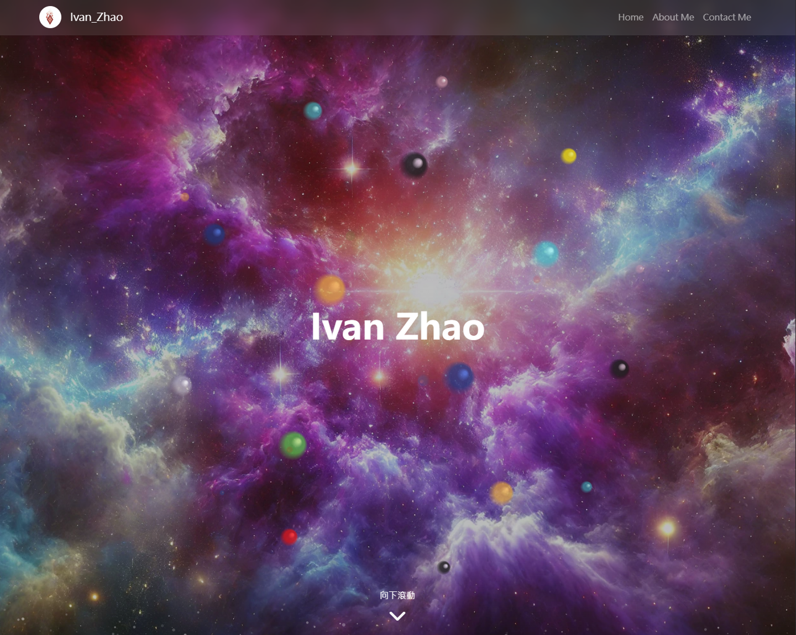
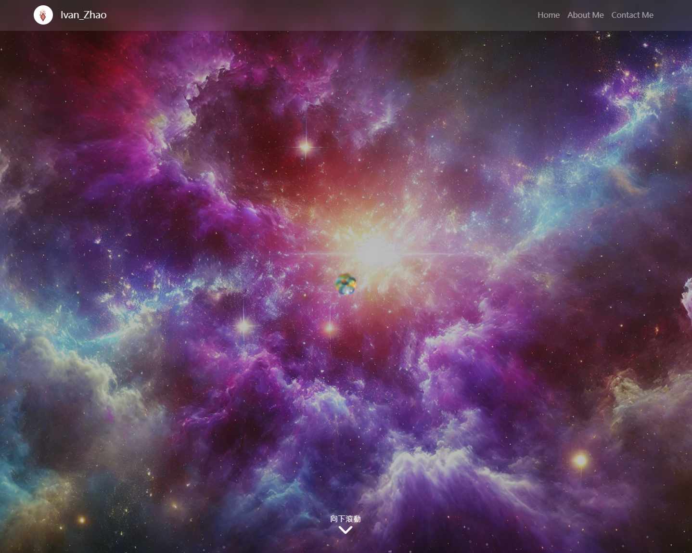

首屏展示以完整長圖呈現資訊密度與版面節奏。
採用區塊化敘事，先用全長網頁視覺建立第一印象，讓使用者在閱讀前就掌握品牌語氣與內容層次。
右側以專案脈絡補充目標受眾與服務定位，形成「先感受、再理解」的閱讀順序。

以桌面端情境圖搭配實際頁面，說明品牌在教育領域的專業感與親和力平衡。
三大配色分別承擔穩定、信任與引導功能，協助使用者快速辨識資訊優先順序。
左側聚焦內頁資訊架構，包含課程列表、內容索引與行動呼籲按鈕配置。
右側使用自動橫移展示多張實機頁面，模擬使用者在不同內容段落的瀏覽節奏。

內頁重點：資訊清晰、操作直覺、轉換動線一致。
此案例將內容展示轉化為可持續營運的網站解決方案，兼顧品牌形象與商業目標。